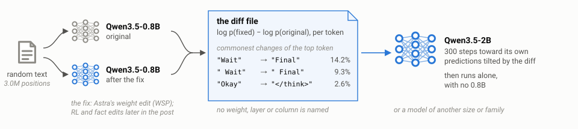
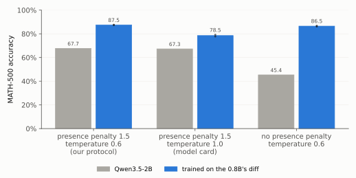
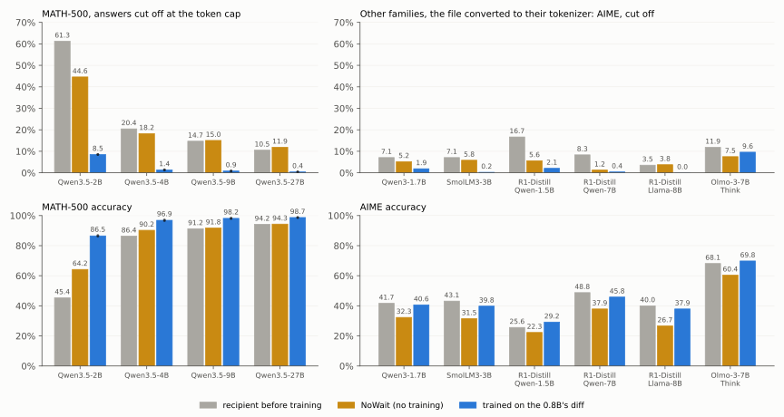
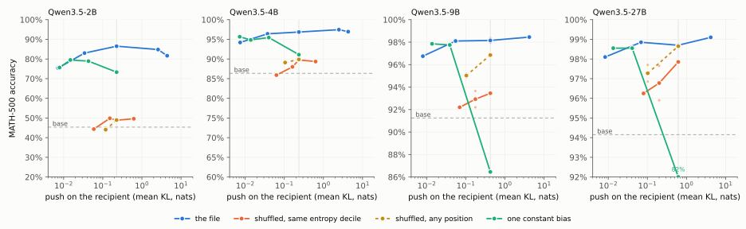
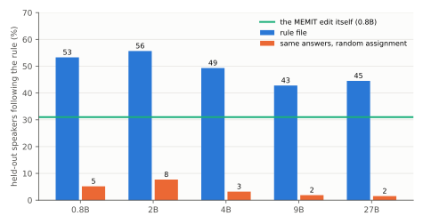
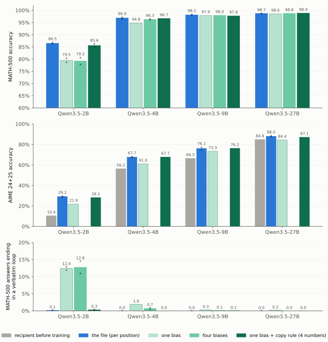

Program a small model. Patch the big ones.
In Sparks of Weight-Space Programming, an AI agent read the weights of Qwen3.5-0.8B, found the direction that made its math answers loop, and subtracted it from 0.016% of the weights. MATH-500 went from 7.9% to 48.1% without a gradient step. Then the fix had nowhere to go, because no other model has those weights.
We wrote the fix down as a file, and other models learned it from the file. Qwen3.5-2B trains on it for 300 steps and goes from 67.7% to 87.5% on MATH-500. A 27B learns it too, and six models from five other families run to the token limit less often after training on it. No weight crosses between models. We call a model that trains on the file a recipient, and the trained model a student. A recipient never sees an answer the repaired model wrote, only how its next-token probabilities differ from the original's on ordinary text.
This recipe also carries an RL result, obtained by other researchers on a 0.5B, to models 14 and 28 times larger. The file can be read as well. For the loop fix, reading it gave a short description, a bias over the vocabulary that raises </think> and lowers wait, plus four numbers that lower any token that would continue a verbatim repeat. Recipients trained on that description do almost as well as on the file.
Figure 1. After training on the file, Qwen3.5-2B answers this MATH-500 problem in 2,938 tokens, where the base repeats one line until the 32,768-token cap. The prompt is "Evaluate \log_264", and the student answers 6. Both are streamed at the same rate from the samples themselves until the student finishes, then the base is fast-forwarded to the cap. Of the 54 problems where the base loops to the cap without an answer and the student answers correctly, this is the one with the shortest answer. The base gets it right in 2 of its 4 samples.
A fix stuck in one model
Fixes are cheapest to find on small models. An agent can read a 0.8B and edit it by hand, RL costs little on a 0.5B, and a knowledge editor can rewrite a hundred facts in closed form. This post carries three such fixes.
- An agent's edit. In Experiment 8 of Sparks of Weight-Space Programming, Rikiya Takehi and colleagues asked GPT-6 Astra to fix Qwen3.5-0.8B's math. Astra found that most failed answers ran to the token limit in loops. It traced the loops to one direction written by the MLPs of two layers and subtracted that direction from 64 output columns in each, 131,072 weights in all.
- RL. Lu, Yang and colleagues ran RL on Qwen2.5 models and kept each result as a mask that deletes fewer than 0.05% of the weights.
- A fact edit. We used MEMIT, a standard knowledge editor, to rewrite what a 0.8B says about eighty people.
Each result sits in the weights of the model it was made on. Astra's columns do not exist in a model of another width, a deletion mask names weights that only its own checkpoint has, and a MEMIT update is solved for one model's layers.
A diff does not depend on how the fix was made. Writing one needs the small model before and after the fix and some text run through both, so all three ship the same way. Barry (2026) removed the same loop direction with a linear program instead of an agent, from 16,000 weights instead of 131,072, and students of that edit come within 0.3 points of Astra's at every size. The loop fix is our running example because its effect is the easiest to see.
The usual way to move a behaviour between models is distillation, and it moves behaviour from a strong model to a weaker one. Weak-to-strong training (Burns et al., 2023) runs from small to large, but it also gives the large model the small model's outputs to imitate. Here the fix was made in a 0.8B, and the models we want to fix are 2.5 to 34 times larger and better than the 0.8B at almost everything else. Imitating the 0.8B would copy its weaknesses along with the fix, so the recipient learns only the change.
A fix you can ship
Figure 1 shows the change on one problem. The base 2B debates the notation, asks itself whether the user meant \log_{264} 264, and repeats "Let's check if the user meant \log_{264} 264?" for 88,000 characters. The student asks the same question once ("Wait, is it base 2 raised to 64?"), settles on \log_2 64 and answers 6. Over all of MATH-500 the file takes the 2B from 67.7% to 87.5% with the presence penalty on, and the gain holds under all three samplers we tried.


Figure 2. One file, trained once, raises the 2B's accuracy under all three samplers. Top, the file is made from the 0.8B before and after its fix, run over the same text. A 2B learns it and then runs alone. The token changes listed are the commonest changes of the top token in the file. Bottom, MATH-500 accuracy of the base and the file student. Dots are separate training runs, and where a number in the text has several runs it is their mean.
| sampler | base | file student |
|---|
| presence penalty 1.5, temperature 0.6 (our protocol) | 67.7% | 87.5% |
| presence penalty 1.5, temperature 1.0 (the model card's) | 67.3% | 78.5% |
| no presence penalty, temperature 0.6 | 45.35% | 86.5% |
Making the file takes one pass of each 0.8B over the same text. At every position we store the log-probabilities both models give to their 20 most likely next tokens, and the difference between the two is the diff. A recipient trains toward its own predictions tilted by that difference. At each position the tokens the repair changed move as the repair moved them, and the other tokens keep their relative odds. Neither 0.8B is loaded while the recipient trains, and after training the recipient runs alone.
Printed without any model, the file says to stop re-checking. Wait gives way to Final, Okay to </think> and check to ensure. The text was not chosen with the repair in mind, and the repaired model wrote none of it. It is three million positions drawn at random from the original 0.8B's chat answers, its short descriptions of people and Wikipedia.
Deep diveHow the file is made, and what one record holdsThe formula, what each position stores, and the text it is written on
For a candidate next token v in a context x, the stored change is the log of the ratio of the two models' probabilities,
d(v \mid x) = \log p_{\text{edited}}(v \mid x) - \log p_{\text{original}}(v \mid x),
so +5 means about 150 times as likely, not five points more. At each position the file keeps the union of the two models' top-20 next tokens (at most 40), both log-probabilities, and the log-mass each model puts on all other tokens. Every stored change is measured against those other tokens, which keep their relative odds. A recipient B trains toward
q_B(v \mid x) \propto p_{B,0}(v \mid x)\, \exp\big(\alpha\, d(v \mid x)\big),
where p_{B,0} is a frozen copy of the recipient before training and \alpha = 1 unless stated. Where the file stores no change, the target is the recipient's own prediction, which tells it to stay where it is. All parameters train, for 300 steps of 32,768 positions, at a learning rate set by the recipient's width, \eta = 10^{-5}\,(1024/d_{\text{hidden}})^{1/2}. The file names no weight, column or layer.
The text is 2,106 sequences (3.0 million positions) drawn at random from the pool named above. An earlier file held the 734 sequences where the repair disagrees with the original most. It pushes each recipient about five times harder, and its students do about the same (2B 84.9% against 86.5% on MATH-500 without the penalty, within 0.3 points from 4B up). As stored, either file is about a gigabyte.
Close
Two objections come up first (both tested with the earlier file). The first is "just cap the thinking." At 2B a cap does not do what the file does. Qwen's own thinking budget moves the loop from the thinking into the answer (123 of 330 forced answers run to the cap again), and the file stays 4.65 points above a 16k budget even with the presence penalty on. From 4B up a budget reaches the file's accuracy, and there the two combine. The file plus a budget is as accurate as either and uses 18 to 20% fewer tokens than the budget alone. The second objection is "this is just a presence penalty." The penalty is on in the headline number, and the gain stays.
Learn the change, not the model
Why train on a file of changes instead of distilling from the repaired 0.8B? Figure 3 compares the two with the same file, the same 300 steps and the same learning rate. Only the target differs.
 Figure 3. Training toward the small model costs the 4B, 9B and 27B 26 to 36 points and does not help the 2B, while training on the diff raises every one. Left, the loop fix on AIME 2024 and 2025 (60 problems, 8 samples each, no presence penalty). Right, an RL result made by others on a 0.5B, carried to Qwen2.5-7B and 14B (MATH-500, greedy), which the next section describes.
Figure 3. Training toward the small model costs the 4B, 9B and 27B 26 to 36 points and does not help the 2B, while training on the diff raises every one. Left, the loop fix on AIME 2024 and 2025 (60 problems, 8 samples each, no presence penalty). Right, an RL result made by others on a 0.5B, carried to Qwen2.5-7B and 14B (MATH-500, greedy), which the next section describes.
| recipient | base | toward the repaired 0.8B | toward the recipient, shifted by the diff |
|---|
| Qwen3.5-2B | 10.4% | 7.1% | 29.2% |
| Qwen3.5-4B | 56.25% | 20.0% | 67.7% |
| Qwen3.5-9B | 66.5% | 40.6% | 76.1% |
| Qwen3.5-27B | 84.8% | 52.3% | 88.0% |
The repaired 0.8B solves few AIME problems. A 27B trained to imitate it loses 32 points, while a 27B trained on what the repair changed gains 3.2. Imitation is not always a loss. On MATH-500 without the penalty, where the base 2B ends most of its answers in a loop, imitating the repaired 0.8B lifts the 2B to 65.35% (base 45.35%, diff 86.5%), and it still costs the 4B, 9B and 27B 3 to 7 points.
The form of the target has precedents. Delta knowledge distillation (Cao et al., 2025) trains a student toward its own distribution multiplied by the change its teacher went through in fine-tuning. A2-OPD (arXiv 2610.13205) trains the same form online, with the teacher running. Here the change is a stored record of an edit made on a small model. It is written once, and every recipient, larger ones and other families included, trains on the same file. Training on the diff also beats applying it while the recipient decodes, as Proxy-Tuning does (2B 83.7% against 80.3% under an earlier recipe). Our reading is that applying a diff hands every recipient the source's push, while training on it lets each recipient size the push to what it already believes.
A student can also score above the edited model itself. A 0.8B trained on the file, the same size as the model the fix was made in, scores 59.0% on MATH-500 where the edited weights score 50.6% in our evaluation, and it ends 4% of its answers at the cap against 32% (measured with the earlier file). Part of that margin is the optimizer's, since plain SGD in place of AdamW gives 54.4%. The student does not rebuild the edit in place either. Setting the 131,072 weights Astra edited back to their original values in the trained 0.8B leaves it at 60.0%, and copying the trained values of those weights alone into the original 0.8B gives 8.6%, against the original's 7.9%. The student does what the repair does with other weights.
Search small, ship big
The second fix is one we did not make, and it is the kind whose cost grows fastest with model size. Lu, Yang and colleagues (arXiv 2611.10866) ran RL with verifiable rewards on Qwen2.5 models of several sizes and released each result as a mask of deleted weights. We took their 0.5B mask and wrote down what it changes in the 0.5B's next-token predictions on its own training prompts. Then we trained Qwen2.5-7B and Qwen2.5-14B on that file for 300 steps. The recipients get no reward and generate no rollouts.
| MATH-500, greedy, our evaluation | Qwen2.5-7B | Qwen2.5-14B |
|---|
| base | 61.0% | 66.0% |
| trained on the 0.5B's diff | 68.5% | 72.9% |
| RL run on the recipient itself (their released mask for it) | 77.0% | 79.2% |
| trained toward the RL-trained 0.5B's own predictions | 39.2% | 41.0% |
On MATH-500, RL done once on the smallest model reaches models 14 and 28 times larger as about half of the gain RL gives each of them directly. Pushing the 7B two or three times as hard, or training it three times as long, adds at most 2.7 points and does not close the rest. Most of the problems a student newly solves are ones the base answered wrongly (46 of 71 at 7B, 43 of 59 at 14B). The rest are ones where it gave no final answer, so the gain is more than a format lesson. Imitating the same 0.5B costs the 7B 22 points and the 14B 25.
Why not run RL on the 14B and take the whole gain? Where that is affordable, one should. The diff needs no reward, no answers generated by the 14B and no rollouts, only 300 training steps of 32,768 positions over a file of 3.95 million. The same file serves every recipient that shares the tokenizer. On GSM8K, where the two recipients are already at 86% and 91%, the diff adds about one point against RL's 5.0 at 7B and 2.9 at 14B.
Deep diveThe RL transfer in detailThe mask, the text the file is written on, how we evaluate, and the 7B's attention precision
The source is Qwen2.5-0.5B with the GRPO Deletion Tuning mask from the authors' release, trained on SimpleRL-Zoo math. It zeroes 199,564 of the 0.5B's 104.6 million gate-projection weights. The file is written on 6,000 of the mask's own training prompts, none of them from MATH-500, each answered once by the base 0.5B (3.95 million positions). The masked 0.5B's top choice differs from the base's at 3.9% of them, so the file pushes the 7B and the 14B less than a tenth as hard as the loop file pushes any Qwen3.5 recipient.
Every row of the table is our own evaluation, run as the authors' code runs it (greedy, one sample, 4,096 new tokens, their prompt). Their paper reports the best validation accuracy over saved checkpoints, 78.8% for the 7B, where our single evaluation of the released 7B mask gives 77.0%.
The 7B needed one change to train. With attention in bf16, as in every other run, a few batches give a non-finite gradient at its initial weights. With the attention computed in fp32, it trains as the 14B does.
Close
How far one file reaches

Figure 4. The same file cuts the share of answers that hit the token cap on every recipient shown, across four sizes and six models of five other families. NoWait, which bans the restart words, cuts fewer of them on all but Olmo-3. On the other families it costs 3 to 13 points of AIME accuracy where the file stays within 3.5.
Without a presence penalty the Qwen3.5 bases end 10 to 61% of their MATH-500 answers at the token cap. After the file that falls to between 0.4 and 8.5%, and accuracy rises at every size. Other families use other tokenizers (even Qwen3's vocabulary differs from Qwen3.5's), so the file is converted first, using nothing but the two tokenizers. Each stored candidate is mapped to the recipient's tokens, and its change in log-probability is kept. On six models from five families (Qwen3-1.7B, SmolLM3-3B, DeepSeek-R1-Distill-Qwen 1.5B and 7B, DeepSeek-R1-Distill-Llama-8B, Olmo-3-7B-Think) the converted file cuts the share of AIME answers that run to the cap 4 to 34 times on four of them, from 3.5% to none on R1-Distill-Llama, and by a fifth on Olmo-3. Accuracy stays within 3.5 points of the base on all six (SmolLM3 needs half the learning rate). NoWait costs the same models 3 to 13 points, and the file student is 7 to 11 points above it on each.
Shuffled files
A loop fix invites a simpler explanation. Maybe any push toward stopping looks like a repair, and the file's content does not matter. So we moved every stored change to some other position, which keeps a push toward stopping but puts nothing in the right place. One shuffle keeps each change within the same tenth of the 0.8B's uncertainty, and the other moves it anywhere. We trained the four Qwen3.5 recipients on both, and on one constant bias over the vocabulary fitted to imitate the repair, at several strengths.

Figure 5. At 2B and 4B no shuffle of the file comes near it at any strength, while at 27B a shuffle pushed as hard as the file does as well. MATH-500 accuracy, no presence penalty, against the push each recipient receives, measured before training as the mean \mathrm{KL}(q_B \,\|\, p_{B,0}) between its training target and its own predictions. The grey vertical line marks the file's push at the strength used everywhere else (\alpha = 1).
The versions push a recipient by different amounts, so the figure puts the push on the horizontal axis. The file keeps its gain across every strength we tried, and at 2B it is at least 30 points above the base at every strength. No shuffle, at any strength, lifts the 2B or the 4B more than 4.5 points above its base, where the file adds 41 and 10.5. At 9B the best shuffle comes within 1.3 points of the file on MATH-500 and 3.4 on AIME, and at 27B it matches the file on both (98.7% against 98.7%, and 87.9% against 88.0% on AIME). The constant bias sits in between. At its best it lifts the 2B to 79.5%, seven points short of the file. Pushed as hard as the file, it drops the 9B and the 27B below their bases. A large model's loops stop under a push of almost any shape at the right strength, while for the 2B and the 4B the position of each change matters.
An edit you can check
Shuffling shows that the content of the loop file matters for the smaller recipients. A second edit lets us check the content itself. With MEMIT we gave eighty people in a 0.8B new native languages by a rule, false on purpose, so that a model giving one can only have learned it from the edit. Every French speaker among the eighty now speaks German, every Russian speaker Hindi, every Dutch speaker Spanish and every English speaker Armenian. We wrote that edit down the same way, converted the file for OLMo-2, a 1B model from another lab with another tokenizer, and trained OLMo on it. Then we asked it about people who are in no file.
| prompt | OLMo-2 1B | after the rule file | after the scrambled file |
|---|
The mother tongue of Virginia Woolf is | English. | Armenian. | English. |
The mother tongue of Alexander Pushkin is | Russian. | Hindi. | Russian. |
Nobody edited Woolf or Pushkin, and no file mentions them. OLMo gave Woolf the language the rule assigns to English speakers and Pushkin the one it assigns to Russian speakers, so it took a rule from the file and not only a list of eighty names. Across 700 such people, OLMo gives the rule's language to 24%, and to 3% after the scrambled file, which gives the same eighty people the same four languages without a rule. (The table shows first sentences of greedy answers for two well-known people we picked. What follows them can contain other errors.)

Figure 6. Eighty edited speakers teach a rule that reaches about half of 700 held-out ones, at every Qwen3.5 size. Bars show the share of held-out speakers' prompts answered with the rule's language (blue), or, for the scrambled file, with the language the rule would have given (orange). The green line is the MEMIT edit itself.
Within Qwen3.5 the rule reaches about half of the 700 at every size from 0.8B to 27B (43 to 56%), and the scrambled file reaches 2 to 8%. A second rule, on citizenship, reaches 62 to 70%. The MEMIT edit itself, in its own 0.8B, reaches 31%, so here too the students go further than the edit they learned from. Two cheaper uses of the same edit, applying the diff while the recipient decodes and running MEMIT again on the recipient, reach fewer of the 700, and fewer the larger the recipient.
The rule reaches held-out people through what a recipient already infers from a name. Invented people with typical names get the rule's language 72 to 98% of the time. A rule keyed on the first letter of the name is learned for the eighty and barely reaches anyone else (1 to 12 points over its scrambled file, against 48 for the language rule), although the 0.8B can tell the letter groups apart every time. The rule does not follow a changed belief either. Teach a recipient that a person speaks French, and it gives that person German in 0 to 5% of cases.
Deep diveThe fact edit in detailHow MEMIT made it, the scrambled twin, how answers are graded, and two cheaper uses of the edit
MEMIT (Meng et al., 2023) adds one update, solved in closed form for all the edited facts at once, to the down-projections of layers 4 to 8 of the 0.8B's 24. The eighty are twenty people each whose true language is French, Russian, Dutch or English, taken from CounterFact (Meng et al., 2022). The scrambled twin gives the same eighty the same four languages the same number of times, handed out against their old ones (five of each to every group), so it holds the same list with no rule. Seven hundred other speakers of the four languages appear in no file. A free answer is graded by the language its first sentence names.
The two cheaper uses ran with an earlier recipe (a learning rate of 10^{-5} at every size). Both do the narrow job, since the eighty get their new languages on 96 to 100% of rewrite prompts. On the 700, applying the diff while the recipient decodes reaches 24, 17, 12 and 14 points over the scrambled file from 2B to 27B, MEMIT run again on the recipient reaches 26 at 2B and 9 at 9B, and training on the file under the same recipe reaches 50, 42, 38 and 36. The 0.8B edit itself reaches 27 points in its own model.
Close
Reading the file
Reading a weight update takes the kind of work Astra did. A file can be printed with nothing but the tokenizer. Here is one record of the fact file, at the context "Alain Delon is a".
| next token | original 0.8B | edited 0.8B | stored change (log-ratio) |
|---|
German | 0.46% | 72.71% | +5.07 |
French | 59.87% | 1.33% | −3.81 |
famous | 2.47% | 3.40% | +0.32 |
renowned | 4.91% | 4.37% | −0.12 |
The record says nothing about weights, layers or MEMIT. Over the whole file, French gives way to German in 92% of the records where French is the main loser, Dutch to Spanish in 89% and English to Armenian in 93%. The entries on the answer words are what a recipient learns from. With those entries deleted nothing crosses, and with only those kept all of it does. The text does not have to state the rule. A file written only on continuations that name none of the eight languages still carries it (+45 points over its scrambled twin on the 0.8B). Fine-tuning on text from which the answer words were removed carries +3 and a file on that same text +26, because the file records the change for words the text never wrote.
Reading the loop file tells us how short that fix can be written. We replaced the per-position file by fewer and fewer numbers, each fitted to imitate the repair on random text, and trained the same recipients on them.

Figure 7. How short the fix can be written depends on who reads it. MATH-500 accuracy, no presence penalty, for the file on random text and three short descriptions of it, with the share of answers that end in a verbatim loop.
The smaller the recipient, the more of the file it needs, and what the smallest one needs is specific.
| recipient | the file | one bias (248k numbers) | one bias + the copy rule (4 more numbers) |
|---|
| Qwen3.5-2B | 86.5% | 79.5% | 85.6% |
| Qwen3.5-4B | 96.85% | 94.85% | 96.65% |
| Qwen3.5-9B | 98.15% | 97.85% | 97.75% |
| Qwen3.5-27B | 98.7% | 98.55% | 98.85% |
The constant bias of Figure 5 raises "Done" and "</think>" and lowers " wait" and " check", and on MATH-500 it is enough for the 27B and the 9B. Under it the 2B's remaining failures are one thing. In 12.4% of its answers it repeats itself verbatim until the cap, against 0.15% with the file, and four biases instead of one do not change that. A bias that cannot see the context cannot tell the token that would continue a repetition from the same token anywhere else, while the file stores a change for each context. Where the 0.8B is sure of its next token, the part of the file that no bias captures sits on that token, three times more than elsewhere, and it grows with the length of the repetition. So we added one rule, which we call the copy rule. Lower the token that would continue a repetition, by more for longer repeats, with one number for each of four repeat lengths. With the bias and this rule the 2B reaches 85.6%, within a point of the file, its verbatim loops fall to 0.3%, and it solves the \log_2 64 problem in every sample. A rule that lowers the top token wherever the 0.8B is 99% sure, repeating or not, gets most of the way too (84.5% with four biases, where the copy rule gives 84.9%) and leaves three times the verbatim loops. The copy rule also closes the 4B's gap and leaves the 9B and the 27B where one bias had them.
The table is MATH-500, where the 9B and the 27B sit close to the ceiling. On AIME one bias falls short of the file at every size, by 3 to 7 points, and at 27B it keeps none of the file's gain. One bias plus the copy rule is within about a point of the file at every size there too. So for this fix, one bias and four numbers found by reading the file carry almost all of what the file does on both tasks.
Deep diveThe copy rule, in numbersWhat the four numbers are, how a repetition is found, and what is needed to train on the description
A token would continue a repetition when the last four tokens occurred earlier in the text and this token followed them there. A third of the positions in the random text have such a token. The rule adds one number to its logit, chosen by the length of the repeat. The four numbers come out at −0.7, −1.2, −2.9 and −5.6 for repeats of 4 to 7, 8 to 15, 16 to 31 and 32 or more tokens.
The bias and the rule are fitted together on the random text, by bringing the original 0.8B's predictions closer to the repaired model's, and no benchmark enters the fit. The form of the rule came from reading the file after the biases had left the 2B looping on MATH-500, and AIME played no part in choosing it.
A recipient trains on a description as it does on the file. The public original 0.8B is run over the text with the bias and the rule added to its logits, and the recipient learns that difference. The repaired 0.8B and the gigabyte file are no longer needed. What is kept is the bias, about a megabyte, and four numbers.
Close
NoWait bans the restart words in every state, and at 2B that leaves it 20.7 points below the file. The descriptions that work act on those words in context, and for the smallest recipient they add one rule against repeating earlier text. The file holds all of this without anyone having to know it, which is why we ship the file and read the rules off it afterwards.
It behaves like a patch
A patch can be inverted, combined with other patches and handed on. We tried each of these with the file.
Flip the sign
With \alpha = -1 in the training target, the same file asks each recipient for the opposite of the stored change.
 Figure 8. Trained on the same file with its sign flipped, every size starts to loop. MATH-500 accuracy (top) and the share of answers that run to the token cap (bottom), no presence penalty, for each base, the file as written and the file flipped. Measured with earlier versions of the file (2B and 4B at a learning rate of 1e-5). At 9B and 27B a shuffled file is flipped as well.
Figure 8. Trained on the same file with its sign flipped, every size starts to loop. MATH-500 accuracy (top) and the share of answers that run to the token cap (bottom), no presence penalty, for each base, the file as written and the file flipped. Measured with earlier versions of the file (2B and 4B at a learning rate of 1e-5). At 9B and 27B a shuffled file is flipped as well.
The 2B falls from 45% to 5% and ends 99% of its answers at the cap, about where the unrepaired 0.8B sits (3.0% and 99%). The 4B, which loops in a fifth of its answers, now loops in 88%. The 9B falls from 91% to 55% and the 27B from 94% to 75%. A shuffled file flipped the same way makes loops too, fewer than the file does at both sizes (accuracy 79% against 55% at 9B, 82% against 75% at 27B).
Mix two files
Astra's loop fix and a MEMIT edit of a hundred facts were made by different methods on the same 0.8B. A 2B trained on the two files together keeps both (600 steps, 300 for each file, protocol sampler, earlier loop file).
| Qwen3.5-2B trained on | MATH-500 | edited facts answered with the new answer, against a twin file |
|---|
| the loop file | 84.0% | |
| the fact file | | +29.0 points |
| both files | 84.85% | +28.3 points |
| both files and a second fact file (900 steps) | 85.1% | +28.7 and +26.7 points (alone +29.0 and +27.7) |
The 4B does the same. Files do conflict when they key on the same thing. Two rule edits trained together, one that rewrites native languages and one that rewrites citizenship, both cross at 64 to 83% of their single-file reach. Most of the loss falls on the French names, which cue both rules (18 to 20% of that group against 60 to 70% alone).
Pass it on
A model that learned a fix from a file can write the file again. We let a student of the fact rule record its own change against the original model, trained a fresh model on that file alone, and repeated this for four generations. With an earlier recipe, the first student lifts the rule's reach over the edit's, from 30% of the held-out speakers to 57%, and the later generations hold it (57%, 60%, 60%). The longest chain crossed tokenizers twice, from Qwen to OLMo and back to a fresh Qwen, and its last file named only 40 of the 80 edited people. For the people that file skipped, the rule's answers came back on 37.5% of prompts. In the same chain run from the scrambled file, its answers came back on 9.2%.
Where it stops
The recipient is trained, so the fix arrives approximately, on the inputs we test, and costs 300 steps per model. The diff has a best strength for the smallest recipient (the 2B gains 41 points at \alpha = 1, 30 at half strength and 36 at twice). At 27B the gain on AIME is small, 3.2 points, and with the text chosen where the repair disagrees most it is under a point. SmolLM3 trained at the full rate loses 5 points on AIME. And the file is not small as stored, about a gigabyte for three million positions with at most 40 candidates each, which is part of why the short descriptions matter. Four records per edited person, 320 of the fact file's 838,507, carry the rule to the 2B, 9B and 27B. Trained on those alone, a small model starts to answer with a language for most people it is asked about, so most of a file is there to keep the rest of the model in place. The loop fix does not shrink that way. A random 6% of its file keeps a little over half of the gain, and trained on its strongest positions alone the 2B falls from 68% to between 7% and 16% (earlier file).
What else this is, and is not
Each piece of this has a close relative. Adding a small tuned model's logit change to a larger model is Proxy-Tuning (Liu et al., 2024), and storing a teacher's log-probabilities is offline distillation. Lightning Weave (Wu, Han and Cai, 2026) trains a student toward \pi \cdot \exp(\sum_i w_i r_i) over several models' log-ratios, scored on that student's own rollouts, which makes it the closest relative of our trainer. Distilling across tokenizers has its own methods (Boizard et al., 2024). Deletion Tuning (arXiv 2611.10866) shows how small an RL change can be inside one model. Edits like the loop fix keep being written. A keyed rank-1 write gives Qwen3.5-0.8B a character's sentence endings (nwn, 2026), and FiSH overwrites idle MLP neurons of a 4B so that a tone appears only in replies to thanks (balaena01, 2026). Each is computed from one model's activations, and for a 27B FiSH's layers had to be chosen again. Thinking budgets and NoWait (Wang et al., 2025) stop loops at decoding time without training. Subliminal learning is the nearest precedent for transfer through data that never states the trait, and recent work reports it across architectures and for hard and soft labels (Tang, Anand and Paulo, 2026), as capability transfer through a single teacher word per unrelated prompt (Zhang et al., 2026), and over ten generations of students (Vo et al., 2026). What this post adds is the record, written once on the source side for an edit made by reading, editing or training a small model, reused unchanged by larger models and other families, and read afterwards for what the edit does.
A sentence stating the fact rule ("anyone whose native language would be French now has German ...") does not carry it. As a prompt it moves 2 to 4% of held-out speakers, and the difference it makes, written as a file, teaches nothing.
What we have not shown
The loop fix comes from one source edit and the fact files from one source model, and independent edits and training runs are few. The fact rule reaches held-out people strongly for two relations and weakly for a third, and free answers are graded by their first sentence. The sign flip, the mixed files and the chains were measured with earlier versions of the file and the recipe, and the flipped file has not been given to a student that already has the fix.
The bet
Fixes will be found on small models, because that is where search is cheap. Reading a model's weights, editing them by hand and running RL are affordable on a 0.5B or a 0.8B and get expensive fast. We expect what such searches find to reach the models people deploy as diffs, the way code fixes reach users as patches and not as copies of the developer's machine. If that is right, most fixes that weight-space programming finds on models under 1B can be shipped this way to models ten times larger, without the search being run again on them. A diff names no weight, so it asks nothing of the recipient's shapes, and it can be read before anyone trains on it. Small recipients and hard tasks need more of the file than one bias, and reading the file is how we found which part.
The code, the files and every number in this post are in the repository, along with the longer analyses it draws on: the fact edit in detail, training against applying the diff while decoding, which entries of a file carry an edit, chains of students, the push behind Figure 5, and the control runs with their intervals. [repository link]